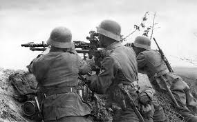
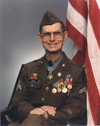

This picture will link you to another webpage that has more information on Desmond T. Doss!

Desmond Thomas Doss
Here, you will find information about a christian soldier that killed not one person. Desmond saved many troops, including enemy troops, that was injured. He didnt leave anyone behind as he took care for anyone he seen injured! Click the buttons below to get started!

Timeline of Nace Desmond Thomas Doss
Year
Description
Feb 7, 1919
Desmond T Doss had a fight with his older brother, took a sheet of brick and hit his brother in the skull, fainting.
APR 11, 1942
Desmond joins the army, aiming for following the footsteps of his father.
APR 24, 1945
He is trained with the 77th Infantry Division
APR 24, 1945
Desmond's division is sent to fight japan
May 21, 1946
Desmond manages to save 75 of his comrades from the battlefield
May 22, 1946
A grenade peppers his legs, waiting 5 hours to be saved
JUL 16, 1946
He is diagnosed with tuberculosis, being necessary to discharge him from the army
MAR 23, 2006
He dies in Alabama in 2006. He was about 87 years old.
Desmond T. Doss
Desmond T. Doss never wanted to kill, but to save. He thought that all types of killing was a simple sin, as he is a christian, so he didnt take part into it. He still did want to join the military though. As a resort, he became a medic for his division. He had armed weapons but he really just "tossed them aside" as if it never did exist. Desmond never killed one man, and he never planned to either during the war. He planned to save all the injured, no matter who or what they are.